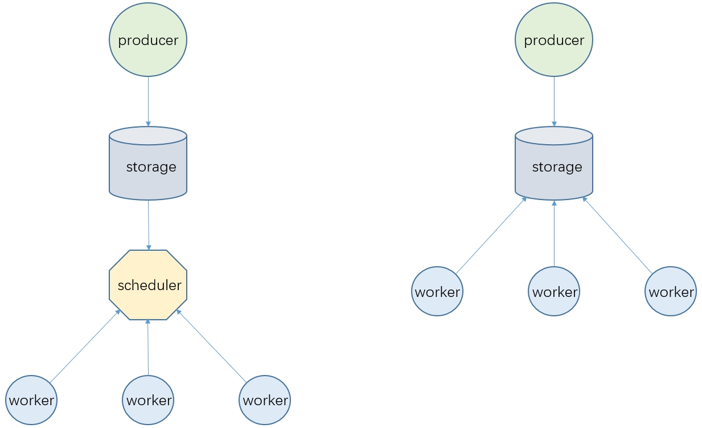

构建业务系统时通常会把一些耗时且复杂的任务放在一个独立的服务中执行，即上图中的 worker，任务量大时为了更快地完成任务还必须启动多个 worker 服务实例，此时就需要考虑怎么把一批任务合理地分配到这些 worker 上执行，本文把这个分配过程称为 调度
下图是两种典型的调度模式，其中 producer 代表任务的生产者，通常是一个单独的服务，storage 代表任务信息的存储，可能是普通的RDB也可能是Redis或消息中间件，下文对这两种模式进一步详细介绍

1. 单独调度服务
scheduler 代表一个单独的调度服务，所有 worker 都从 scheduler 获取任务信息，可能是scheduler主动 push 也可能是 worker 不断 poll
push 和 poll 模式当然也各有利弊，读者可以自行查阅相关资料了解
|
此模式的优势是 worker 更轻量级，尤其是使用基于http协议的 poll 获取任务时，此时 worker 不再局限于使用Java实现，几乎任何语言都可能快速开发出一个 worker 服务
此外此模式还支持在 scheduler 中实现比较复杂的调度策略例如指定 worker、延迟执行等，还能对任务执行做进一步管理，例如任务的超时、重试等
此模式的缺点主要在于开发难度较高，尤其是 scheduler 要考虑到调度过程中的诸多细节，例如怎么实现各个 worker 平均分配、怎么保证 scheduler 的高可用，要不要根据 worker 当前性能情况动态调整调度数量等等，在之前的项目中多次出现过因为 scheduler 设计缺陷导致 任务卡住 的问题